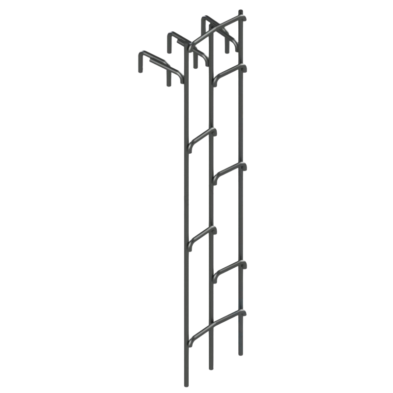

Общая информация и назначение
Канализационные лестницы КЛ-1 (Л-1, Л-18) — это навесные металлические лестницы, предназначенные для спуска в канализационные колодцы и обслуживания трубопроводов. Изготавливаются из гладкой арматуры класса А1.
Доступны два исполнения по диаметру арматуры:
- Ø25 мм: стандартное исполнение, лёгкое и универсальное
- Ø28 мм: усиленное исполнение, повышенная жёсткость и несущая способность
Конструкция представляет собой два параллельных пролёта со ступенями, закреплёнными на мощных крюках. Крюки обеспечивают надёжную фиксацию лестницы в горловине колодца — она не смещается при спуске и подъёме, но при этом легко снимается и переносится между колодцами.
Основные характеристики
- Марка: КЛ-1 (Л-1, Л-18)
- Диаметр арматуры: Ø25 мм или Ø28 мм
- Ширина: 410 мм
- Длина (высота): от 100 см до 1170 см
- Материал: Гладкая арматура А1 по ГОСТ 5781
- Конструкция: Два параллельных пролёта со ступенями
- Крепление: Мощные крюки для фиксации в горловине колодца
Подробнее: материалы, ГОСТы, условия эксплуатации
Дополнительные технические данные
- Артикулы: КЛ-1 … КЛ-11.7 (108 типоразмеров для каждого диаметра)
- Вес (Ø25 мм): от 20 до 234 кг
- Вес (Ø28 мм): от 25,1 до 293,6 кг
- Материал: Гладкая арматура класса А1 по ГОСТ 5781
- Шаг ступеней: 300 мм
- Диаметр обслуживаемых колодцев: Канализационные колодцы по типовым проектам
- Антикоррозионная защита: По требованию заказчика — грунт и эмаль
Соответствие стандартам и условия эксплуатации
Лестницы КЛ-1 изготовлены в соответствии с требованиями к канализационным колодцам и предназначены для эксплуатации внутри железобетонных и кирпичных колодцев канализационных сетей. Крепление крюками к горловине обеспечивает надёжную фиксацию и удобство спуска/подъёма даже в узких колодцах.
Материалы и производство
Основной материал — гладкая арматура класса А1 по ГОСТ 5781. Два параллельных пролёта образуют жёсткую раму, ступени вварены с шагом 300 мм. По требованию заказчика возможно покрытие грунт-эмалью для усиленной защиты от коррозии в условиях агрессивной среды канализации.
Стоимость канализационных лестниц КЛ-1
| Фото | Изделие | Длина, см | Ширина, см | Масса, кг | Цена | ед. изм. | Количество | Корзина |
|---|---|---|---|---|---|---|---|---|
| Канализационная лестница КЛ-1 (Л-1 | Л-18) - 1 | Ø25 мм | длина 100 см | от 100 руб. | 41 | |||
| Канализационная лестница КЛ-1 (Л-1 | Л-18) - 1.1 | Ø25 мм | длина 110 см | от 110 руб. | 41 | |||
| Канализационная лестница КЛ-1 (Л-1 | Л-18) - 1.2 | Ø25 мм | длина 120 см | от 120 руб. | 41 | |||
| Канализационная лестница КЛ-1 (Л-1 | Л-18) - 1.3 | Ø25 мм | длина 130 см | от 130 руб. | 41 | |||
| Канализационная лестница КЛ-1 (Л-1 | Л-18) - 1.4 | Ø25 мм | длина 140 см | от 140 руб. | 41 | |||
| Канализационная лестница КЛ-1 (Л-1 | Л-18) - 1.5 | Ø25 мм | длина 150 см | от 150 руб. | 41 | |||
| Канализационная лестница КЛ-1 (Л-1 | Л-18) - 1.6 | Ø25 мм | длина 160 см | от 160 руб. | 41 | |||
| Канализационная лестница КЛ-1 (Л-1 | Л-18) - 1.7 | Ø25 мм | длина 170 см | от 170 руб. | 41 | |||
| Канализационная лестница КЛ-1 (Л-1 | Л-18) - 1.8 | Ø25 мм | длина 180 см | от 180 руб. | 41 | |||
| Канализационная лестница КЛ-1 (Л-1 | Л-18) - 1.9 | Ø25 мм | длина 190 см | от 190 руб. | 41 | |||
| Канализационная лестница КЛ-1 (Л-1 | Л-18) - 2 | Ø25 мм | длина 200 см | от 200 руб. | 41 | |||
| Канализационная лестница КЛ-1 (Л-1 | Л-18) - 2.1 | Ø25 мм | длина 210 см | от 210 руб. | 41 | |||
| Канализационная лестница КЛ-1 (Л-1 | Л-18) - 2.2 | Ø25 мм | длина 220 см | от 220 руб. | 41 | |||
| Канализационная лестница КЛ-1 (Л-1 | Л-18) - 2.3 | Ø25 мм | длина 230 см | от 230 руб. | 41 | |||
| Канализационная лестница КЛ-1 (Л-1 | Л-18) - 2.4 | Ø25 мм | длина 240 см | от 240 руб. | 41 | |||
| Канализационная лестница КЛ-1 (Л-1 | Л-18) - 2.5 | Ø25 мм | длина 250 см | от 250 руб. | 41 | |||
| Канализационная лестница КЛ-1 (Л-1 | Л-18) - 2.6 | Ø25 мм | длина 260 см | от 260 руб. | 41 | |||
| Канализационная лестница КЛ-1 (Л-1 | Л-18) - 2.7 | Ø25 мм | длина 270 см | от 270 руб. | 41 | |||
| Канализационная лестница КЛ-1 (Л-1 | Л-18) - 2.8 | Ø25 мм | длина 280 см | от 280 руб. | 41 | |||
| Канализационная лестница КЛ-1 (Л-1 | Л-18) - 2.9 | Ø25 мм | длина 290 см | от 290 руб. | 41 | |||
| Канализационная лестница КЛ-1 (Л-1 | Л-18) - 3 | Ø25 мм | длина 300 см | от 300 руб. | 41 | |||
| Канализационная лестница КЛ-1 (Л-1 | Л-18) - 3.1 | Ø25 мм | длина 310 см | от 310 руб. | 41 | |||
| Канализационная лестница КЛ-1 (Л-1 | Л-18) - 3.2 | Ø25 мм | длина 320 см | от 320 руб. | 41 | |||
| Канализационная лестница КЛ-1 (Л-1 | Л-18) - 3.3 | Ø25 мм | длина 330 см | от 330 руб. | 41 | |||
| Канализационная лестница КЛ-1 (Л-1 | Л-18) - 3.4 | Ø25 мм | длина 340 см | от 340 руб. | 41 | |||
| Канализационная лестница КЛ-1 (Л-1 | Л-18) - 3.5 | Ø25 мм | длина 350 см | от 350 руб. | 41 | |||
| Канализационная лестница КЛ-1 (Л-1 | Л-18) - 3.6 | Ø25 мм | длина 360 см | от 360 руб. | 41 | |||
| Канализационная лестница КЛ-1 (Л-1 | Л-18) - 3.7 | Ø25 мм | длина 370 см | от 370 руб. | 41 | |||
| Канализационная лестница КЛ-1 (Л-1 | Л-18) - 3.8 | Ø25 мм | длина 380 см | от 380 руб. | 41 | |||
| Канализационная лестница КЛ-1 (Л-1 | Л-18) - 3.9 | Ø25 мм | длина 390 см | от 390 руб. | 41 | |||
| Канализационная лестница КЛ-1 (Л-1 | Л-18) - 4 | Ø25 мм | длина 400 см | от 400 руб. | 41 | |||
| Канализационная лестница КЛ-1 (Л-1 | Л-18) - 4.1 | Ø25 мм | длина 410 см | от 410 руб. | 41 | |||
| Канализационная лестница КЛ-1 (Л-1 | Л-18) - 4.2 | Ø25 мм | длина 420 см | от 420 руб. | 41 | |||
| Канализационная лестница КЛ-1 (Л-1 | Л-18) - 4.3 | Ø25 мм | длина 430 см | от 430 руб. | 41 | |||
| Канализационная лестница КЛ-1 (Л-1 | Л-18) - 4.4 | Ø25 мм | длина 440 см | от 440 руб. | 41 | |||
| Канализационная лестница КЛ-1 (Л-1 | Л-18) - 4.5 | Ø25 мм | длина 450 см | от 450 руб. | 41 | |||
| Канализационная лестница КЛ-1 (Л-1 | Л-18) - 4.6 | Ø25 мм | длина 460 см | от 460 руб. | 41 | |||
| Канализационная лестница КЛ-1 (Л-1 | Л-18) - 4.7 | Ø25 мм | длина 470 см | от 470 руб. | 41 | |||
| Канализационная лестница КЛ-1 (Л-1 | Л-18) - 4.8 | Ø25 мм | длина 480 см | от 480 руб. | 41 | |||
| Канализационная лестница КЛ-1 (Л-1 | Л-18) - 4.9 | Ø25 мм | длина 490 см | от 490 руб. | 41 | |||
| Канализационная лестница КЛ-1 (Л-1 | Л-18) - 5 | Ø25 мм | длина 500 см | от 500 руб. | 41 | |||
| Канализационная лестница КЛ-1 (Л-1 | Л-18) - 5.1 | Ø25 мм | длина 510 см | от 510 руб. | 41 | |||
| Канализационная лестница КЛ-1 (Л-1 | Л-18) - 5.2 | Ø25 мм | длина 520 см | от 520 руб. | 41 | |||
| Канализационная лестница КЛ-1 (Л-1 | Л-18) - 5.3 | Ø25 мм | длина 530 см | от 530 руб. | 41 | |||
| Канализационная лестница КЛ-1 (Л-1 | Л-18) - 5.4 | Ø25 мм | длина 540 см | от 540 руб. | 41 | |||
| Канализационная лестница КЛ-1 (Л-1 | Л-18) - 5.5 | Ø25 мм | длина 550 см | от 550 руб. | 41 | |||
| Канализационная лестница КЛ-1 (Л-1 | Л-18) - 5.6 | Ø25 мм | длина 560 см | от 560 руб. | 41 | |||
| Канализационная лестница КЛ-1 (Л-1 | Л-18) - 5.7 | Ø25 мм | длина 570 см | от 570 руб. | 41 | |||
| Канализационная лестница КЛ-1 (Л-1 | Л-18) - 5.8 | Ø25 мм | длина 580 см | от 580 руб. | 41 | |||
| Канализационная лестница КЛ-1 (Л-1 | Л-18) - 5.9 | Ø25 мм | длина 590 см | от 590 руб. | 41 | |||
| Канализационная лестница КЛ-1 (Л-1 | Л-18) - 6 | Ø25 мм | длина 600 см | от 600 руб. | 41 | |||
| Канализационная лестница КЛ-1 (Л-1 | Л-18) - 6.1 | Ø25 мм | длина 610 см | от 610 руб. | 41 | |||
| Канализационная лестница КЛ-1 (Л-1 | Л-18) - 6.2 | Ø25 мм | длина 620 см | от 620 руб. | 41 | |||
| Канализационная лестница КЛ-1 (Л-1 | Л-18) - 6.3 | Ø25 мм | длина 630 см | от 630 руб. | 41 | |||
| Канализационная лестница КЛ-1 (Л-1 | Л-18) - 6.4 | Ø25 мм | длина 640 см | от 640 руб. | 41 | |||
| Канализационная лестница КЛ-1 (Л-1 | Л-18) - 6.5 | Ø25 мм | длина 650 см | от 650 руб. | 41 | |||
| Канализационная лестница КЛ-1 (Л-1 | Л-18) - 6.6 | Ø25 мм | длина 660 см | от 660 руб. | 41 | |||
| Канализационная лестница КЛ-1 (Л-1 | Л-18) - 6.7 | Ø25 мм | длина 670 см | от 670 руб. | 41 | |||
| Канализационная лестница КЛ-1 (Л-1 | Л-18) - 6.8 | Ø25 мм | длина 680 см | от 680 руб. | 41 | |||
| Канализационная лестница КЛ-1 (Л-1 | Л-18) - 6.9 | Ø25 мм | длина 690 см | от 690 руб. | 41 | |||
| Канализационная лестница КЛ-1 (Л-1 | Л-18) - 7 | Ø25 мм | длина 700 см | от 700 руб. | 41 | |||
| Канализационная лестница КЛ-1 (Л-1 | Л-18) - 7.1 | Ø25 мм | длина 710 см | от 710 руб. | 41 | |||
| Канализационная лестница КЛ-1 (Л-1 | Л-18) - 7.2 | Ø25 мм | длина 720 см | от 720 руб. | 41 | |||
| Канализационная лестница КЛ-1 (Л-1 | Л-18) - 7.3 | Ø25 мм | длина 730 см | от 730 руб. | 41 | |||
| Канализационная лестница КЛ-1 (Л-1 | Л-18) - 7.4 | Ø25 мм | длина 740 см | от 740 руб. | 41 | |||
| Канализационная лестница КЛ-1 (Л-1 | Л-18) - 7.5 | Ø25 мм | длина 750 см | от 750 руб. | 41 | |||
| Канализационная лестница КЛ-1 (Л-1 | Л-18) - 7.6 | Ø25 мм | длина 760 см | от 760 руб. | 41 | |||
| Канализационная лестница КЛ-1 (Л-1 | Л-18) - 7.7 | Ø25 мм | длина 770 см | от 770 руб. | 41 | |||
| Канализационная лестница КЛ-1 (Л-1 | Л-18) - 7.8 | Ø25 мм | длина 780 см | от 780 руб. | 41 | |||
| Канализационная лестница КЛ-1 (Л-1 | Л-18) - 7.9 | Ø25 мм | длина 790 см | от 790 руб. | 41 | |||
| Канализационная лестница КЛ-1 (Л-1 | Л-18) - 8 | Ø25 мм | длина 800 см | от 800 руб. | 41 | |||
| Канализационная лестница КЛ-1 (Л-1 | Л-18) - 8.1 | Ø25 мм | длина 810 см | от 810 руб. | 41 | |||
| Канализационная лестница КЛ-1 (Л-1 | Л-18) - 8.2 | Ø25 мм | длина 820 см | от 820 руб. | 41 | |||
| Канализационная лестница КЛ-1 (Л-1 | Л-18) - 8.3 | Ø25 мм | длина 830 см | от 830 руб. | 41 | |||
| Канализационная лестница КЛ-1 (Л-1 | Л-18) - 8.4 | Ø25 мм | длина 840 см | от 840 руб. | 41 | |||
| Канализационная лестница КЛ-1 (Л-1 | Л-18) - 8.5 | Ø25 мм | длина 850 см | от 850 руб. | 41 | |||
| Канализационная лестница КЛ-1 (Л-1 | Л-18) - 8.6 | Ø25 мм | длина 860 см | от 860 руб. | 41 | |||
| Канализационная лестница КЛ-1 (Л-1 | Л-18) - 8.7 | Ø25 мм | длина 870 см | от 870 руб. | 41 | |||
| Канализационная лестница КЛ-1 (Л-1 | Л-18) - 8.8 | Ø25 мм | длина 880 см | от 880 руб. | 41 | |||
| Канализационная лестница КЛ-1 (Л-1 | Л-18) - 8.9 | Ø25 мм | длина 890 см | от 890 руб. | 41 | |||
| Канализационная лестница КЛ-1 (Л-1 | Л-18) - 9 | Ø25 мм | длина 900 см | от 900 руб. | 41 | |||
| Канализационная лестница КЛ-1 (Л-1 | Л-18) - 9.1 | Ø25 мм | длина 910 см | от 910 руб. | 41 | |||
| Канализационная лестница КЛ-1 (Л-1 | Л-18) - 9.2 | Ø25 мм | длина 920 см | от 920 руб. | 41 | |||
| Канализационная лестница КЛ-1 (Л-1 | Л-18) - 9.3 | Ø25 мм | длина 930 см | от 930 руб. | 41 | |||
| Канализационная лестница КЛ-1 (Л-1 | Л-18) - 9.4 | Ø25 мм | длина 940 см | от 940 руб. | 41 | |||
| Канализационная лестница КЛ-1 (Л-1 | Л-18) - 9.5 | Ø25 мм | длина 950 см | от 950 руб. | 41 | |||
| Канализационная лестница КЛ-1 (Л-1 | Л-18) - 9.6 | Ø25 мм | длина 960 см | от 960 руб. | 41 | |||
| Канализационная лестница КЛ-1 (Л-1 | Л-18) - 9.7 | Ø25 мм | длина 970 см | от 970 руб. | 41 | |||
| Канализационная лестница КЛ-1 (Л-1 | Л-18) - 9.8 | Ø25 мм | длина 980 см | от 980 руб. | 41 | |||
| Канализационная лестница КЛ-1 (Л-1 | Л-18) - 9.9 | Ø25 мм | длина 990 см | от 990 руб. | 41 | |||
| Канализационная лестница КЛ-1 (Л-1 | Л-18) - 10 | Ø25 мм | длина 1000 см | от 1 000 руб. | 41 | |||
| Канализационная лестница КЛ-1 (Л-1 | Л-18) - 10.1 | Ø25 мм | длина 1010 см | от 1 010 руб. | 41 | |||
| Канализационная лестница КЛ-1 (Л-1 | Л-18) - 10.2 | Ø25 мм | длина 1020 см | от 1 020 руб. | 41 | |||
| Канализационная лестница КЛ-1 (Л-1 | Л-18) - 10.3 | Ø25 мм | длина 1030 см | от 1 030 руб. | 41 | |||
| Канализационная лестница КЛ-1 (Л-1 | Л-18) - 10.4 | Ø25 мм | длина 1040 см | от 1 040 руб. | 41 | |||
| Канализационная лестница КЛ-1 (Л-1 | Л-18) - 10.5 | Ø25 мм | длина 1050 см | от 1 050 руб. | 41 | |||
| Канализационная лестница КЛ-1 (Л-1 | Л-18) - 10.6 | Ø25 мм | длина 1060 см | от 1 060 руб. | 41 | |||
| Канализационная лестница КЛ-1 (Л-1 | Л-18) - 10.7 | Ø25 мм | длина 1070 см | от 1 070 руб. | 41 | |||
| Канализационная лестница КЛ-1 (Л-1 | Л-18) - 10.8 | Ø25 мм | длина 1080 см | от 1 080 руб. | 41 | |||
| Канализационная лестница КЛ-1 (Л-1 | Л-18) - 10.9 | Ø25 мм | длина 1090 см | от 1 090 руб. | 41 | |||
| Канализационная лестница КЛ-1 (Л-1 | Л-18) - 11 | Ø25 мм | длина 1100 см | от 1 100 руб. | 41 | |||
| Канализационная лестница КЛ-1 (Л-1 | Л-18) - 11.1 | Ø25 мм | длина 1110 см | от 1 110 руб. | 41 | |||
| Канализационная лестница КЛ-1 (Л-1 | Л-18) - 11.2 | Ø25 мм | длина 1120 см | от 1 120 руб. | 41 | |||
| Канализационная лестница КЛ-1 (Л-1 | Л-18) - 11.3 | Ø25 мм | длина 1130 см | от 1 130 руб. | 41 | |||
| Канализационная лестница КЛ-1 (Л-1 | Л-18) - 11.4 | Ø25 мм | длина 1140 см | от 1 140 руб. | 41 | |||
| Канализационная лестница КЛ-1 (Л-1 | Л-18) - 11.5 | Ø25 мм | длина 1150 см | от 1 150 руб. | 41 | |||
| Канализационная лестница КЛ-1 (Л-1 | Л-18) - 11.6 | Ø25 мм | длина 1160 см | от 1 160 руб. | 41 | |||
| Канализационная лестница КЛ-1 (Л-1 | Л-18) - 11.7 | Ø25 мм | длина 1170 см | от 1 170 руб. | 41 |
В нашей компании вы можете приобрести канализационные лестницы КЛ-1 (Л-1, Л-18) в двух исполнениях: из арматуры Ø25 мм и Ø28 мм. Изделия изготавливаются из качественной арматуры в строгом соответствии с нормативами.
Цена на лестницу напрямую зависит от длины изделия и диаметра арматуры. Мы предлагаем широкий ассортимент конструкций длиной от 100 до 1170 см.
*Цены указаны от минимальной стоимости и не являются публичной офертой. Финальная цена зависит от объема заказа и условий поставки.
Преимущества лестниц КЛ-1
- Навесная конструкция — быстрое крепление
- Два параллельных пролёта — повышенная жёсткость
- Мощные крюки для фиксации в горловине
- Два исполнения по диаметру: Ø25 мм и Ø28 мм
- Доступная цена
- Соответствие ГОСТ и строительным нормативам
Оформление заказа и консультация
На данный момент в корзине 0 шт. товаров.
Для оформления заказа и детального просмотра выбранных товаров, перейдите в корзину или свяжитесь с нашим менеджером. Наши специалисты оперативно обработают ваш запрос, уточнят финальную стоимость (с учетом объема и доставки) и помогут завершить покупку.
+7 (965) 555-99-66